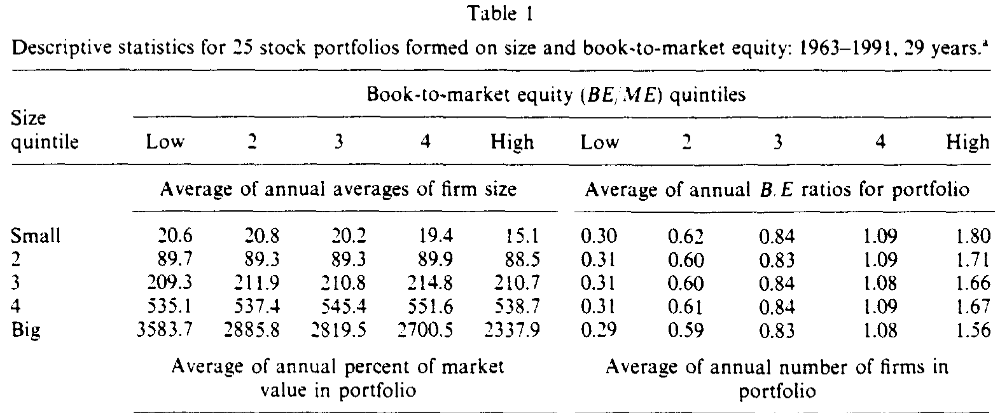
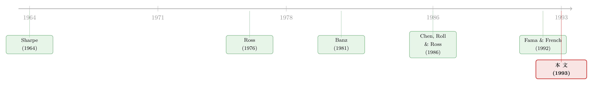

五个因子，一张网：股票和债券原来在听同一段话
本文读的是 Fama & French (1993, Journal of Financial Economics)：股票与债券的回报背后，共有五个共同风险因子——三个来自股票市场（整体市场、规模 SMB、账面市值比 HML），两个来自债券市场（期限 TERM、违约 DEF）。作者用时间序列回归证明，这五个因子不仅捕捉了回报的共同变动，更"解释"了股票与债券的平均收益。这就是日后家喻户晓的三因子模型的奠基之作。
1 一个让人难堪的事实
先讲一件让 1990 年代初的资产定价学界很难堪的事。
按照 Sharpe (1964) 和 Lintner (1965) 的资本资产定价模型 (Capital Asset Pricing Model, CAPM)，一只股票的平均收益应该只取决于一样东西——它对市场组合的敏感度，也就是 市场 beta (β)。beta 越高，承担的系统性风险越大，平均收益就该越高。这是一句听上去无可挑剔的话。问题是，数据不答应。把美股的横截面平均收益拿出来，和它们的 beta 一比，你几乎看不出什么关系（这一点 Reinganum (1981) 早就指出过）。
更尴尬的还在后头。那些在资产定价理论里"没有任何名分"的变量，反而一个个站出来说自己能解释平均收益：公司规模 (size, ME) 能（Banz, 1981）、盈余价格比 (E/P) 能（Basu, 1983）、杠杆能（Bhandari, 1988）、账面市值比 (book-to-market equity, BE/ME) 也能（Rosenberg, Reid & Lanstein, 1985）。理论说该管用的不管用，理论说不该管用的全管用。
到了 Fama and French (1992a)，他们干脆把这些变量一锅端，放进同一个横截面回归里对质。结论很干脆：beta 单独用、或者和别的变量一起用，对平均收益几乎没有信息；而 size 和 BE/ME 这两个变量，几乎吸收掉了杠杆和 E/P 的全部解释力。换句话说，解释美股横截面收益，两个经验变量——规模和账面市值比——就够了。
可这恰恰把问题推向了更深的地方。如果市场是理性定价的，那么任何与平均收益相关的变量，都必须是某种共同的、无法分散掉的风险的代理。 size 和 BE/ME 如果真值钱，它们就该对应着某种"大家一起承担、谁也躲不开"的风险。但 Fama and French (1992a) 用的是横截面回归，它能告诉你这两个变量"管用"，却没法告诉你它们背后到底有没有那样一个共同风险因子在动。
于是问题来了：怎么才能看见那个因子？
2 换一种问法：从横截面到时间序列
真正关键的一步，是换一种问法。
Fama and French (1992a) 用的是 Fama and MacBeth (1973) 的横截面回归——把股票的平均收益，去回归那些被怀疑能解释收益的变量。这套方法有个先天的局限：你没法把债券塞进去。一只政府债、一只公司债，哪来的"规模"和"账面市值比"？这两个变量对债券毫无意义。
可是，本文作者偏偏想把债券也拉进来。理由很朴素：如果股票市场和债券市场是一体的（integrated），那么一个像样的模型，就该同时解释股和债，而不是各管一摊。债券回报里重要的变量，没准也能帮上股票的忙；反过来也一样。
所以他们改用 Black, Jensen and Scholes (1972) 的时间序列回归。做法是：把每个月股票或债券的超额收益，去回归一组"模拟组合"(mimicking portfolio) 的收益——市场组合、规模因子、账面市值比因子、以及债券的期限结构因子。这一换，好处立刻显现：
首先，回归的斜率（slope）就是因子载荷（factor loading），它对债券和股票同样有清晰的含义——就是对某个风险因子的敏感度。size 和 BE/ME 这种"标签式"变量在债券身上说不通，但"对某个因子有多敏感"这件事，债券和股票都说得通。
接着，一个自然的问题是：怎么判断模型好不好？这里用的是超额收益（月度收益减去一月期国库券利率）做回归。Merton (1973) 给过一个干净的判据：一个设定良好的资产定价模型，回归出来的截距应该和 0 没有区别。截距偏离 0 多远，就是模型没能解释掉的那部分平均收益。
这是个相当严苛的标尺。它不只要求模型解释长期债券和股票的回报，连一月期国库券利率本身，都得一并解释清楚。
3 因子是怎么"造"出来的
要做这个回归，先得把五个因子一个个造出来。这一节是全文的"积木"，值得慢慢看。
两个债券因子。 第一个叫 TERM，对应利率意外变动的风险。它等于长期政府债的月度收益，减去上月末测得的一月期国库券利率——后者代表债券的"一般预期收益水平"，所以 TERM 捕捉的就是长期债收益因利率移动而偏离预期的那部分。第二个叫 DEF，对应违约风险。它等于一篮子长期公司债的收益，减去长期政府债的收益。经济状况一变、违约可能性一动，这个差值就会动。Chen, Roll and Ross (1986) 早就用过 TERM 和类似 DEF 的变量来解释股票收益，本文确认了它们的踪迹确实清晰地印在股票的时间序列里。
三个股票因子，难点在前两个。 作者先用 2×3 的双重排序造出六个组合：按 NYSE 规模中位数把所有股票分成"小/大"两组（S, B），再按 NYSE 的 BE/ME 断点（最低 30% Low、中间 40% Medium、最高 30% High）分成三组，交叉得到六个组合 S/L、S/M、S/H、B/L、B/M、B/H。然后：
SMB（small minus big，规模因子）= 三个小盘组合的简单平均收益 −三个大盘组合的简单平均收益。因为两边的加权平均账面市值比大致相同，这个差值就基本剔除了 BE/ME 的影响，只剩下"大小"的差别。HML（high minus low，价值因子）= 两个高 BE/ME 组合（S/H、B/H）的平均 −两个低 BE/ME 组合（S/L、B/L）的平均。两边规模大致相同，于是这个差值基本剔除了规模的影响，只剩下"价值与成长"的差别。
这套"互相对冲掉对方"的设计有多成功？看一个数字就够了：1963–1991 年间，SMB 和 HML 这两个月度模拟收益的相关系数只有 −0.08。两个因子几乎正交，干净利落。
最后是市场因子 RM − RF：RM 是那六个组合里全部股票（再加上被排除在外的负账面权益股）的价值加权收益，RF 是一月期国库券利率。
一个容易被忽略的细节：六个组合用的是 价值加权（value-weighted）而非等权。作者解释，这既是在"最小化方差"的精神之下（收益方差与规模负相关），更重要的是，价值加权得到的模拟组合，才真正对应现实中可投资的机会，捕捉的是大盘股与小盘股、价值股与成长股之间真实的收益差异。
4 检验的标尺：截距为什么必须是零
把因子造好之后，全文真正的"中心方程"就只剩一个——那个时间序列回归本身。先看完整的五因子版本：
$$ R_i - R_F = a_i + b_i (R_M - R_F) + s_i\,\text{SMB} + h_i\,\text{HML} + m_i\,\text{TERM} + d_i\,\text{DEF} + e_i $$
这里 \(R_i - R_F\) 是第 \(i\) 个组合的月度超额收益，右边是五个因子，\(e_i\) 是残差。整篇论文的逻辑张力，全压在那个不起眼的 \(a_i\) 上：
为什么截距等于 0 这么关键？因为方程两边都是"零投资"或超额收益的概念：左边是借入国库券、买入资产 \(i\) 的净收益；右边的每个因子要么本身是超额收益（如 \(R_M - R_F\)），要么是零投资组合（如 SMB、HML）。如果这几个因子的风险溢价，恰好能把资产 \(i\) 的全部平均超额收益解释干净，那么常数项 \(a_i\) 就没有立足之地——它必须是 0。\(a_i\) 离 0 越远，就说明有一块平均收益，是这些因子的溢价"喂不饱"的。
理解了这把尺子，结果就好读了。
对股票而言：无论回归里还放了别的什么，模拟规模与账面市值比的组合 SMB、HML 都能捕捉股票收益里强烈的共同变动——这正是"size 和 BE/ME 确实是共同风险代理"的直接证据。而对那 25 个组合，包含 \(R_M - R_F\)、SMB、HML 的三因子回归，截距都接近 0。三个因子，就把美股平均收益的横截面解释得相当干净。
这里还藏着一个漂亮的分工。SMB 和 HML 能解释股票之间收益的差异，却解释不了"股票整体比一月期国库券高出那一大截"——这份活儿留给了市场因子。在同时含规模和价值因子的回归里，所有股票组合在市场因子上的斜率都接近 1，于是市场因子的风险溢价，就把股票的平均收益和国库券连了起来。
对债券而言：模拟期限结构的两个因子 TERM、DEF，捕捉了政府债与公司债收益里的绝大部分变动。它们也"解释"了债券的平均收益——只不过，TERM 和 DEF 的平均溢价，和债券的平均超额收益一样，都接近 0。换句话说，"所有公司债与政府债组合的长期预期收益都相同"这个假设，也没法被拒绝。
5 数据：25 个篮子与七种债券
要被解释的资产（回归的因变量）有两类。债券方面，是两个政府债组合（1–5 年、6–10 年期，来自 CRSP）和五个按穆迪评级分的公司债组合（Aaa、Aa、A、Baa，以及 LG，即 Baa 以下的低评级）。股票方面，是按规模和账面市值比双向排序得到的 25 个组合。样本是 1963 年 7 月到 1991 年 12 月。
为什么用 25 个 size–BE/ME 组合，而不是别的？因为目标就是要看 SMB、HML 能不能抓住与规模、价值相关的共同因子，而这种排序天然会产生一大片宽幅的平均收益，正好拿来给竞争的定价模型当"考题"。这 25 个组合的月度平均超额收益，从 0.32% 一路铺到 1.05%，跨度不小；在每个规模档里，平均收益都随 BE/ME 上升而上升，最高与最低 BE/ME 之间的差额，从 0.19% 到 0.62% 每月不等。规模与价值的效应，在这片"考题"里清清楚楚。
Table I 给出这 25 个组合的描述性统计，让人对样本的样貌有个直观印象。

Table I
这张表里有个细节很有意思：因为用的是 NYSE 的断点来分组，最小规模档里塞进了最多的股票（大多是 Amex、NASDAQ 的小盘股），可这五个组合每个平均还占不到全部 25 个组合市值的 0.70%；反过来，最大规模档股票最少，市值却最大——最大规模的五个组合合起来约占总市值的 74%，而"又大又便宜"的那一格（最大规模、最低 BE/ME，也就是大牌成功公司）一个就吃掉了三成以上。小盘股数量上声势浩大，价值上却轻如鸿毛。
6 反转：股与债，真的各说各话吗？
到这里，故事似乎可以收尾了：股票有三个因子，债券有两个因子，各管一摊。但本文最精彩的一笔，恰恰是去问：这两摊，真的是分割的吗？
答案是否定的，而且方式很微妙。
先看一个出人意料的事实：把期限结构因子 TERM、DEF 单独放进股票回归里，它们竟然能捕捉股票收益里相当强的共同变动——股票在这两个因子上的斜率，看起来和债券差不了多少。乍一看，股和债像是被同一阵风吹动的。
可是，一旦把股票市场因子也加进回归，反转就出现了：所有股票组合在 TERM、DEF 和市场因子上的载荷，会变得彼此非常接近。结果就是，一个股票的市场组合，已经把那部分与市场因子、与两个期限结构因子相关的共同变动一并吸收了。债券因子对股票"看似有用"，其实是市场因子的影子。
反过来看债券：单独用 RM − RF、SMB、HML 去回归债券，这些股票因子也像是能捕捉债券收益的共同变动。但只要把 TERM、DEF 一并放进债券回归，除了低评级公司债之外，股票因子的解释力就全部蒸发了。低评级公司债是唯一的例外——它身上同时带着股性和债性，这并不意外。
于是结论收束成一句话：回报里至少有三个股票因子、两个期限结构因子。股票之间的共同变动来自三个股票因子；股票与债券之间，则通过两个期限结构因子相连。除低评级公司债外，政府债与公司债的共同变动，只由两个期限结构因子驱动。股债两个市场，远非随机分割，但把它们缝在一起的针脚，主要是期限结构因子，而非规模与价值。
7 文献脉络
把这篇论文放回它的时代，脉络就清楚了。
源头是 Sharpe (1964)、Lintner (1965) 的 CAPM——一个 beta 定天下的优雅世界。紧接着，Ross (1976) 的套利定价理论 (Arbitrage Pricing Theory, APT) 打开了"多因子"的大门：收益可以由不止一个共同因子驱动，只是它没说因子具体是谁。
然后是一连串"异象猎手"。Banz (1981) 抓到了规模效应，Basu (1983) 抓到了 E/P，Rosenberg, Reid and Lanstein (1985) 抓到了账面市值比。与此同时，Chen, Roll and Ross (1986) 走了另一条路，用宏观变量（包括期限与违约因子）去解释股票收益，把"因子要有经济含义"这件事摆上了台面。

但真正关键的转折，是 Fama and French (1992a)——它用横截面回归宣判了 beta 的"死刑"，把 size 和 BE/ME 推上前台。本文（Fama and French, 1993）正是那篇论文的逻辑续集：既然 size 和 BE/ME 管用，就必须证明它们背后真有共同风险因子在动，于是换用时间序列回归，把债券一并拉进来，造出 SMB、HML、TERM、DEF，并用"截距等于 0"这把严苛的尺子来检验。三因子模型由此成型，也成了后来"因子动物园"故事的起点。
这条线一路延伸到今天：因子是不是全球共通的（可参见《Fama-French 因子是「全球」的，还是「各回各家」的？》）、国际市场里规模/价值/动量的表现（《全世界都有「价值」和「动量」，只有日本是个例外》）、因子到底从何而来（《弱替代：因子动物园是从哪里冒出来的？》），乃至 Fama 本人多年后对"贴现率即一切"的总结（《贴现率：资产定价的中心议题》）。而本文真正"未竟"的那半边——公司债的因子——至今仍是热土（可参见《贝塔还是特征？——公司债收益里那场被忽略的「站队」》）。
8 评论与延伸（Q&A + 研究方向）
(a) 几个可能的疑问
Q：这篇 1993 和它前一年的 1992a，到底有什么本质区别？
方法不同，问题也更深一层。1992a 用 Fama-MacBeth 横截面回归，回答的是"哪些变量与平均收益相关"，结论是 size 和 BE/ME。本文用 Black-Jensen-Scholes 时间序列回归，回答的是"这些变量背后是否真有共同风险因子，以及它能否同时定价股与债"。前者发现了规律，后者给规律找了一个（风险的）解释，并把它扩展到债券。
Q：为什么非要看截距，而不是看 R²？
R² 高只说明因子捕捉了收益的"共同变动"，是关于方差的；截距说明因子的溢价能否解释"平均收益的水平"，是关于均值的。两者是两件事。一个模型完全可能 R² 很高（抓住了共同波动），截距却显著不为 0（漏掉了一块平均收益）。本文的厉害之处，是三因子回归对 25 个股票组合同时做到了 R² 高且截距近 0。
Q：SMB 和 HML 的相关系数只有 −0.08，这是巧合吗？
不是巧合，是设计。
SMB在构造时让两边的加权平均 BE/ME 大致相等，从而剔除价值的影响；HML则让两边规模大致相等，剔除规模的影响。这套"互相净化"的双向排序，本就是为了让两个因子尽量正交，−0.08 是这套设计成功的证据。
Q：既然 TERM、DEF 的平均溢价接近 0，那它们还算"解释"了债券的平均收益吗？
算，但要小心读。它们捕捉了债券收益的共同变动（方差那一面），这一点很强。至于平均收益——因为本文样本期里，各类债券的平均超额收益本身就都接近 0，所以"溢价接近 0"恰恰意味着模型没有制造出本不存在的预期收益差。这其实也是为什么作者说，不能拒绝"所有债券组合长期预期收益相同"的假设。
Q：用 NYSE 断点、却把 Amex 和 NASDAQ 股票也分进去，会不会让组合很不均衡？
会，而且作者自己也承认。最小规模档塞满了 Amex/NASDAQ 小盘股（1991 年小盘组有约
3,616只股票），但市值占比极低；最大规模五个组合占了约74%的市值。这种数量与市值的严重错配，是用 NYSE 断点的直接后果。好在因子用价值加权，溢价主要由真实可投资的大盘部分决定，结论不至于被一堆"数量多、市值轻"的微型股牵着走。
Q：这套结论是只对 size–BE/ME 组合成立的"自我实现"吗？
这是最该担心的一点。25 个组合本就是按 size 和 BE/ME 排出来的，用
SMB、HML去解释它们，多少有"用同一把尺子量自己"的嫌疑。作者意识到了，所以在文中提到会用按 E/P、D/P（盈余价格比、股息价格比）排序的组合做稳健性检验——这些变量同样与平均收益相关，却不是因子的构造依据。这才是更公允的考场。
(b) 几个可能的研究问题与提案
1. 公司债的"SMB/HML"应该长什么样？
【经济故事】本文坦承，除低评级公司债外，股票因子对债券几乎无用，债券主要由
TERM、DEF驱动。但低评级公司债是个例外，它身上股债交织。一个自然的问题是：在公司债自己的横截面里，有没有类似规模、价值的"特征因子"？发行规模、信用利差、久期、流动性，谁是真正被定价的那一个？ 【可行性】中。数据上可用 TRACE 成交、Mergent FISD 发行特征、以及评级数据。识别上最大的坑是流动性与违约风险的纠缠，且这一领域已有惨痛教训——一篇构造"公司债四因子"的 JFE 论文最终因时间对齐错误被作者撤回（见《一篇被作者亲手撤回的 JFE》），提醒人因子构造的时点对齐极其敏感。doable，但必须把数据卫生做到极致。
2. 外资持有结构会不会改变 TERM/DEF 的载荷？
【经济故事】本文把股债用期限结构因子缝在一起，前提是一个相对封闭、一体化的美国市场。如果一只公司债的持有人里外资占比很高，它对全球利率冲击（而非本国
TERM）的敏感度会不会更强？外资是不是给债券带来了一个本土因子之外的"全球期限/违约"维度？ 【可行性】中偏低。需要债券层面的持有人国别数据（如 TIC、保险公司 NAIC 持仓、共同基金持仓），与TERM/DEF载荷做横截面比较。识别难点在于持有结构本身是内生的——评级好、流动性强的债券既吸引外资、又天然载荷不同。需要一个外生冲击（如指数纳入、可投资度变化）来破内生性。
3. 截距检验在"流动性枯竭"时期会失灵吗？
【经济故事】本文的截距检验默认因子溢价是平稳的。但在 2008 或 2020 这种流动性骤停的时段，公司债的平均超额收益可能短暂地被流动性溢价主导，使三/五因子的截距显著偏离 0。这个偏离本身，是不是一个可定价的流动性因子？ 【可行性】高。数据现成（TRACE + 国债曲线），方法就是把样本切成危机/非危机子区间，看截距的时变。已有大量公司债流动性的度量工具可借用。识别上较干净，因为危机时点是外生的。属于"加一个因子、看截距能否归零"的经典增量工作。
4. 把"价值加权"换成别的权重，因子还稳吗？
【经济故事】作者明确选了价值加权，理由是对应真实投资机会。但近年关于"基础市场因子其实只是一小撮巨头"的讨论（可参见《两种市场收益的故事》）提示，权重方案会实质改变因子的含义。如果用等权或别的加权重做
SMB/HML，三因子对 25 个组合的截距还会近 0 吗？ 【可行性】高。纯复现+稳健性工作，数据用 CRSP/Compustat 即可，识别无需额外设计。适合作为方法论审视的一篇小而扎实的文章。
9 我的判断
先说贡献。本文最了不起的，不是"发现了 size 和 BE/ME"——那是 1992a 的功劳——而是把一个经验规律，翻译成了一个可检验、可证伪、且能跨资产类别的风险模型。它用"截距等于 0"这把严苛的尺子，逼着竞争模型去同时解释国库券、债券和股票；它用价值加权的双向排序，造出了两个近乎正交的因子；它还顺手回答了一个被忽略的大问题：股债两个市场究竟是不是分割的。三因子模型之所以能统治此后三十年的实证资产定价，靠的就是这种"既能解释波动、又能解释均值、还能换样本不塌"的稳健。
对识别的担忧，我有两点。其一，是那个挥之不去的"循环"——用按 size 和 BE/ME 排出来的组合，去检验以 size 和 BE/ME 为基础构造的因子，天然占便宜。作者用 E/P、D/P 组合做的稳健性检验是对的方向，但要真正服人，最好是在因子构造完全不知情的资产上检验。其二，是因子的"风险解释"始终悬而未决。本文证明了 SMB、HML 捕捉共同变动，却没能给出它们对应的、能写下来的状态变量是什么——它们到底在为哪一种宏观风险买单？这是 CAPM 有、而三因子缺的东西，也是后来无数文献（包括 Fama 自己的 1992b 工作论文，试图把 size/BE/ME 与盈利能力的经济基本面挂钩）反复纠缠的地方。
我接下来最想看到的，是把这套框架诚实地搬到公司债与外资持有人上。本文把债券拉进了模型，却也老实承认，除了低评级公司债，股票因子对债券几乎无能为力——债券的横截面，本文几乎没碰。三十年后，公司债到底有没有自己的"SMB 与 HML"、流动性该占几个因子、外资持有结构会不会改写期限与违约的载荷，这些问题至今没有公认的答案。Fama 和 French 在 1993 年缝好了股与债之间的那道针脚，但债券这一侧的布料，他们其实只裁了一个角。
参考文献
Banz, Rolf W. (1981). The relationship between return and market value of common stocks. Journal of Financial Economics 9(1), 3–18.
Basu, Sanjoy (1983). The relationship between earnings yield, market value, and return for NYSE common stocks: Further evidence. Journal of Financial Economics 12(1), 129–156.
Bhandari, Laxmi Chand (1988). Debt/equity ratio and expected common stock returns: Empirical evidence. Journal of Finance 43(2), 507–528.
Black, Fischer, Michael C. Jensen, and Myron Scholes (1972). The capital asset pricing model: Some empirical tests. In M. Jensen (ed.), Studies in the Theory of Capital Markets. Praeger, New York.
Breeden, Douglas T. (1979). An intertemporal asset pricing model with stochastic consumption and investment opportunities. Journal of Financial Economics 7(3), 265–296.
Chen, Nai-fu, Richard Roll, and Stephen A. Ross (1986). Economic forces and the stock market. Journal of Business 59(3), 383–403.
Fama, Eugene F., and Kenneth R. French (1992a). The cross-section of expected stock returns. Journal of Finance 47(2), 427–465.
Fama, Eugene F., and Kenneth R. French (1993). Common risk factors in the returns on stocks and bonds. Journal of Financial Economics 33(1), 3–56.
Fama, Eugene F., and James MacBeth (1973). Risk, return and equilibrium: Empirical tests. Journal of Political Economy 81(3), 607–636.
Lintner, John (1965). The valuation of risk assets and the selection of risky investments in stock portfolios and capital budgets. Review of Economics and Statistics 47(1), 13–37.
Merton, Robert C. (1973). An intertemporal capital asset pricing model. Econometrica 41(5), 867–887.
Reinganum, Marc R. (1981). A new empirical perspective on the CAPM. Journal of Financial and Quantitative Analysis 16(4), 439–462.
Rosenberg, Barr, Kenneth Reid, and Ronald Lanstein (1985). Persuasive evidence of market inefficiency. Journal of Portfolio Management 11(3), 9–17.
Ross, Stephen A. (1976). The arbitrage theory of capital asset pricing. Journal of Economic Theory 13(3), 341–360.
Sharpe, William F. (1964). Capital asset prices: A theory of market equilibrium under conditions of risk. Journal of Finance 19(3), 425–442.